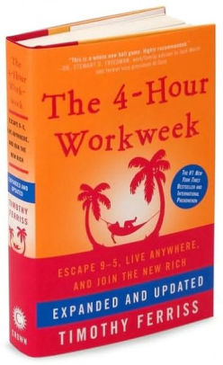
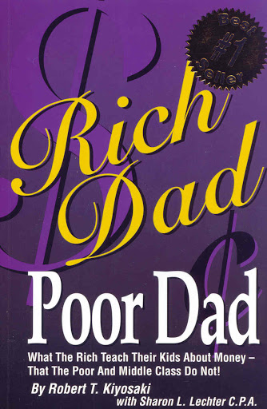

Scott's Personal Website
Professional Life
Interests
Hobbies
Contact
Interests
Music
Scott enjoy's many different genres of music including country, pop, rock, and alternative.
Some of his favorite singers and groups include Kenny Chesney, Maroon 5, Papa Roach and All Time Low.
Reading
Scott mostly enjoys reading books about business, success, and financial literacy
Some of Scott's favorite books that he recommends include "The 10X Rule" by Grant Cardone, "The 4 Hour Work Week" by Tim Ferris, and "Rich Dad Poor Dad" by Robert Kiyosaki.
 
Social Media
Scott uses many social media platforms and enjoys posting and spending time on social media.
Click here to visit Scott's Instagram